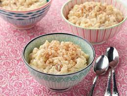

Arroz Con Leche

Description
Rice pudding is a dish made from rice mixed with water or milk and other ingredients such as cinnamon, vanilla and raisins.
Variants are used for either desserts or dinners. When used as a dessert, it is commonly combined with a sweetener such as sugar
Ingredients
- 7 cups of water
- 1 cup long grain white rice
- 2 cinnamon sticks
- 12 oz. can evaporated milk
- 14 oz. can sweetened condensed milk
- 1 cup whole milk
- cinnamon
Steps
- Add water, rice and cinnamon sticks to a large saucepan and cook on medium-high heat. Bring to a boil and let cook for 16-18 minutes.
- Drain liquid from the sauce pan, remove cinnamon sticks and put rice back in the pan. Add all 3 milks - evaporated milk, condensed milk and whole milk to the pan. Let come to a boil.
- Reduce heat to low and cook for about 20 minutes, stirring constantly. The milk can easily burn so it's important to stir as much as possible as it thickens.
- Pour rice into cups and sprinkle on cinnamon. If you like more cinnamon, add 1 tsp of cinnamon in when adding the milks. Serve warm.